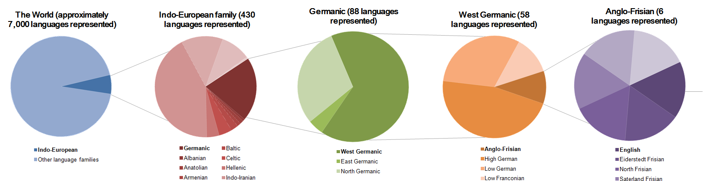
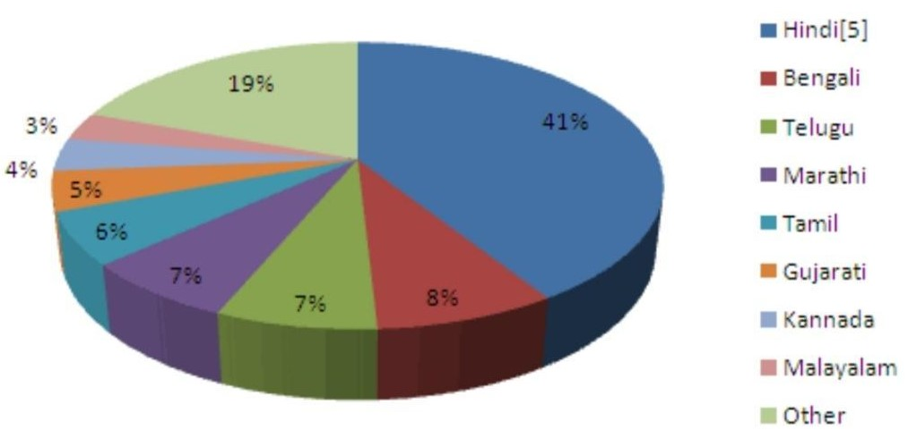

.png)
Known as a "museum of languages," India is home to numerous languages and dialects, reflecting its linguistic plurality. This plurality is marked by a seamless transition rather than stark divisions, with dialects gradually blending into one another. In transitional zones, multilingualism is common as individuals navigate the contact between different languages.
History of Indian Languages
The Indian language branch's history is frequently divided into three stages:
- Old Sanskrit, which includes Vedic and classical Sanskrit.
- Middle (approximately 3rd century BCE) consists of the Prakrit varieties of Sanskrit, including Pali, and Late (about 3rd century BCE).
- The contemporary languages of the northern and central parts of the Indian subcontinent are included in this category, dating from around the 10th century CE.
Linguistic overview:
Indian languages have originated from various sources and are strongly tied with India’s different ethnic groupings. It is divided into six categories:
- Indo-Aryan
- Sino-Tibetan
- Dravidian
- Negroid
- Austric
- Others
Over the years, Indian languages have interacted with one another, resulting in the primary
language divisions of modern India. Indo-Aryan and Dravidian are dominant, including all of
India’s major languages.
Indo-Aryan: India’s most populous linguistic group, accounting for roughly 74 percent of
the country’s overall population. It includes Hindi, Marathi, Bengali, Gujarati, Punjabi,
Rajasthani, Assamese, Sindhi, Oriya, Bihari, Kashmiri, Pahari,Urdu, and Sanskrit, as well as
other northern and western Indian languages.
Dravidian: It is the second significant group, consisting primarily of Southern Indian
languages. It includes Telugu, Tamil, Kannada, and Malayalam, the Dravidian group’s primary
languages.
Sino-Tibetan: The Sino-Tibetan is found throughout the Himalayan regions, including
Bihar, Bengal, and Assam, as well as the country’s north-eastern borders.
Austric: The Austro-Asiatic sub-family includes Munda languages spoken in the middle,
eastern, and north-eastern India, as well as Mon-Khmer languages such as Khasi and
Nicobarese.
Others: Adivasi languages, such as Gondi, Kurukh, Khond, Parji, and Mal-Pahariya are
included in this category. They are unique and cannot be categorized in other
groupings.
Official languages in India
- Hindi
- Bengali
- Maithili
- Nepalese
- Sanskrit
- Tamil
- Urdu
- Assamese
- Dogri
- Kannada
- Gujarati
- Bodo
- Manipuri
- Oriya
- Marathi
- Santali
- Telugu
- Punjabi
- Sindhi
- Malayalam
- Konkani
- Kashmiri
Hindi is one of the official languages of India and is spoken by a large population across northern and central India. It is written in the Devanagari script and has a significant presence in Indian cinema and literature.
Spoken primarily in Bangladesh and the Indian state of West Bengal, Bengali is the seventh most spoken language in the world. It has a rich literary tradition with notable figures like Rabindranath Tagore, the first non-European Nobel laureate in Literature.
Maithili is primarily spoken in the Indian state of Bihar and in the eastern Terai region of Nepal. It has a rich cultural heritage and is recognized as one of the 22 scheduled languages of India.
Nepalese is the official language of Nepal and is also spoken in parts of India, Bhutan, and Myanmar. It is written in the Devanagari script and has a literary tradition dating back several centuries.
Sanskrit is an ancient language of India and is considered the liturgical language of Hinduism, Buddhism, and Jainism. Many classical texts, including the Vedas and Upanishads, are written in Sanskrit.
Tamil is one of the oldest living languages in the world, spoken predominantly in the Indian state of Tamil Nadu and in Sri Lanka.It has a rich literary tradition, with ancient works like the Sangam literature dating back over two thousand years.
Urdu is the national language and lingua franca of Pakistan and is also spoken in several states of India. It has a poetic tradition known for its ghazals and is written in the Perso-Arabic script.
Assamese is spoken in the Indian state of Assam and is the easternmost Indo-Aryan language. It has a literary tradition that includes the works of medieval saint-scholar Srimanta Sankardev.
Dogri is spoken in the Jammu region of Jammu and Kashmir in India. It is one of the 22 scheduled languages of India and has a rich folk culture.
Kannada is spoken primarily in the Indian state of Karnataka and has a history dating back over 2,000 years. It has a rich literary tradition, with classical works like the Kavirajamarga and poets like Kuvempu.
Gujarati is spoken in the Indian state of Gujarat and has a significant diaspora worldwide. It has a rich literary tradition and is the mother tongue of Mahatma Gandhi, the leader of the Indian independence movement.
Bodo is spoken by the Bodo people in the northeastern Indian state of Assam. It is one of the 22 scheduled languages of India and has a script called Devanagari.
Manipuri, also known as Meitei, is the official language of the Indian state of Manipur. It has its own script, Meitei Mayek, and a rich cultural heritage, including classical dance and literature.
Odia is spoken in the Indian state of Odisha and has a history that dates back over 1,500 years. It is known for its classical literature, including works like the Mahabharata translated by Sarala Das.
Marathi is spoken in the Indian state of Maharashtra and has a rich literary tradition dating back over 1,000 years. It is known for its contributions to Indian classical and folk music, theatre, and cinema.
Santali is spoken by the Santal people in the states of Jharkhand, West Bengal, Odisha, and Bihar in India. It has its own script called Ol Chiki and a rich oral tradition of folklore and music.
Telugu is spoken in the Indian states of Andhra Pradesh and Telangana and is known for its classical literature and Carnatic music. It is the third most spoken language in India and has a script derived from the Brahmi script.
Punjabi is spoken in the Indian state of Punjab and in Pakistan's Punjab province. It is written in the Gurmukhi script in India and the Shahmukhi script in Pakistan, with a rich tradition of poetry and music.
Sindhi is spoken in the Sindh province of Pakistan and by the Sindhi diaspora in India. It has a rich literary tradition and is written in both Perso-Arabic and Devanagari scripts.
Malayalam is spoken in the Indian state of Kerala and has a script derived from the ancient Grantha script. It has a rich literary and cultural tradition, with classical dance forms like Kathakali and Mohiniyattam.
Konkani is spoken along the western coast of India, primarily in Goa, Karnataka, and Maharashtra. It has a rich tradition of folk music and literature and is written in multiple scripts, including Devanagari, Roman, and Kannada.
Kashmiri is spoken in the Kashmir Valley in the Indian union territory of Jammu and Kashmir. It has a rich cultural heritage, with classical and folk literature, and is written in both Perso-Arabic and Devanagari scripts.
India’s Most Common Languages Depending on the location
The Indian Constitution particularly specifies 22 languages for a reason: the number of speakers
determines which languages are spoken on India’s national and state levels. Almost everyone in
the country speaks one or more languages.
North India: Hindi, Punjabi, Ladakhi, and Kashmiri are some of the languages
spoken.
Northeast India: Nepali, Bengali, Khasi, Assamese, and Manipuri are spoken
languages.
South India: Tamil, Malayalam, Kannada, and Telugu are spoken languages.
India’s west coast: Marathi, Bhili, Konkani, and Gujarati are the language spoken.
Common languages of India
Hindi -
Hindi is India’s most spoken language and the world’s second most spoken language. It is native
to over 100 million people, the majority of whom live in North India. Despite coming from
various linguistic backgrounds, a large majority of the Indian population speaks Hindi.
During India’s independence, Hindi was regarded as a common language. The Indian constitution
designated sixteen languages as official languages in 1950. Later, 14 additional languages were
added to the list, bringing the total number of official languages in India to 22. The
northwestern section of India is home to the majority of Hindi speakers. They account for half
of the country’s population, which spans 11 states, including Delhi and Uttar
Pradesh.
English -
Although English remains a symbol of the British Raj for some, others appreciate its continued
usage as an official language in India, mainly because it is (unofficially) acknowledged as a
business language. Many tourists believe that the better your English is, the more money you
have in Indian merchants’ eyes.
However, especially among the top classes, English does not have a prominent presence in
India’s broad social life. For many Indians, English is no longer a foreign language because
Indians adopted it after over a century of colonization. Indian English is distinct from
Standard English for cultural and linguistic reasons and is commonly referred to as
“Hinglish.”